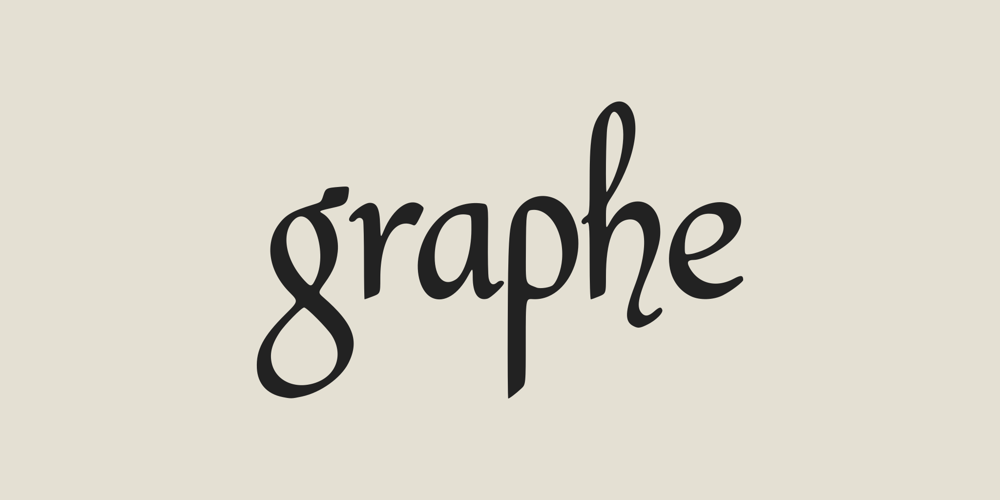

Escolha entre tema claro e escuro para leitura confortável.
Ajusta o tamanho do texto da Bíblia e das janelas laterais.
Muda os textos da interface sem alterar a tradução bíblica ativa.
Claudio Scheer
Graphe is free and open-source. Contributions are welcome!